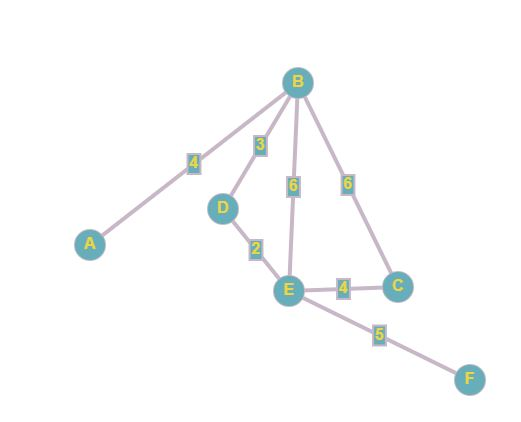

Основы теории графов
Граф — абстрактный математический объект, представляющий собой множество вершин графа и набор рёбер,
то есть соединений между парами вершин. Например, за множество вершин
можно взять множество аэропортов, обслуживаемых некоторой
авиакомпанией, а за множество рёбер взять регулярные рейсы этой
авиакомпании между городами.

Ориентированные и неориентированные графы
Графы, в которых все рёбра являются звеньями (порядок двух концов ребра графа не существенен), называются неориентированными.
Графы, в которых все рёбра являются дугами (порядок двух концов ребра
графа существенен), называются ориентированными графами или орграфами.
Неориентированный граф может быть представлен в виде ориентированного
графа, если каждое его звено заменить на две дуги, имеющие
противоположные направления.


Связный граф — граф, содержащий ровно одну компоненту связности. Это означает, что между любой парой вершин этого графа существует как минимум один путь.

Степень или валентность вершины графа — количество рёбер графа , инцидентных вершине . При подсчёте степени ребро-петля учитывается дважды. Степень вершины обычно обозначается как или . ... 1 максимальная степень равна 5, минимальная — 0.

Деревом называется связный граф без циклов (рисунок ниже). Любые две вершины дерева соединены лишь одним маршрутом.

В
теории графов изоморфизмом графов и называется биекция между
множествами вершин графов такая, что любые две вершины и графа смежны
тогда и только тогда, когда вершины и смежны в графе. Здесь графы
понимаются неориентированными и не имеющими весов вершин и ребер.


Эйлеров
путь в графе — это путь, проходящий по всем рёбрам графа и притом
только по одному разу. Эйлеров цикл — эйлеров путь, являющийся
циклом, то есть замкнутый путь, проходящий через каждое ребро графа
ровно по одному разу. Эйлеров граф — граф, содержащий эйлеров
цикл.

Эйлеровой цепью в неориентированном графе G называется простая цепь, содержащая все ребра графа G. Эйлеровым циклом называется замкнутая Эйлерова цепь. Аналогично, эйлеров путь в орграфе G — это простой путь, содержащий все дуги графа G. Эйлеров контур в орграфе G — это замкнутый эйлеров путь. Граф, в котором существует эйлеров цикл, называется эйлеровым.

Гамильто́нов
граф — математический объект теории графов. Представляет собой
граф, который содержит гамильтонов цикл. При этом гамильтоновым циклом
является такой цикл, который проходит через каждую вершину данного
графа ровно по одному разу


Алгори́тм Де́йкстры (англ. Dijkstra's algorithm) — алгоритм на графах, изобретённый нидерландским учёным Эдсгером Дейкстрой в 1959 году. Находит кратчайшие пути от одной из вершин графа до всех остальных.